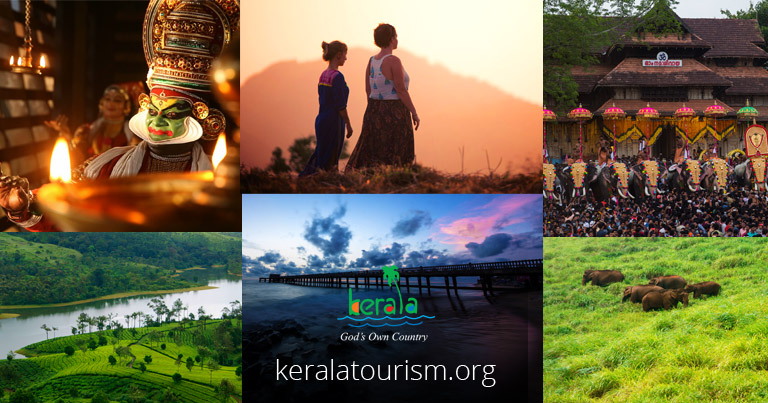
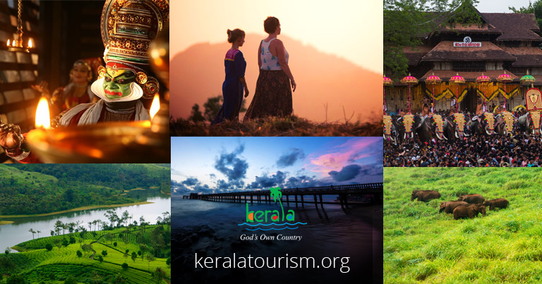

“Kerala, God’s Own Country – The Land of Beauty and Wonders!“
The wealth of natural beauty in the form of placid backwaters, lush greenery, picturesque hill towns, and beautiful beaches has resulted in the name ‘God’s Own Country.’ Munnar’s stunning tea plantations and Alappuzha’s serene backwaters make it into every list of what to see in Kerala.
..
......GOD'S OWN COUNTRY......
DESIGNED BY SURYA